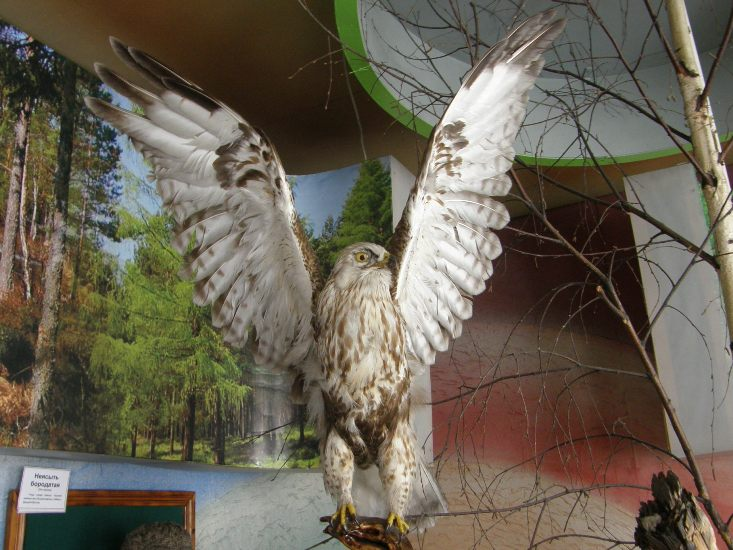
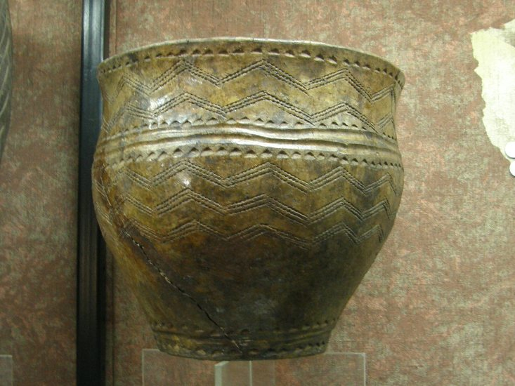
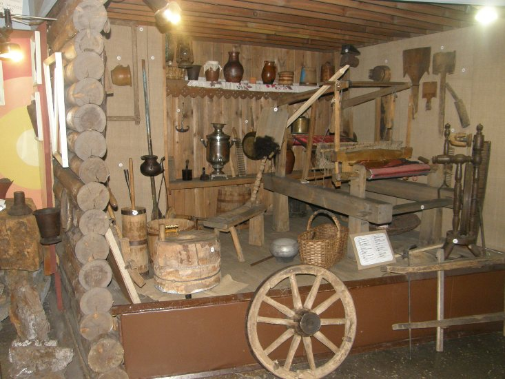
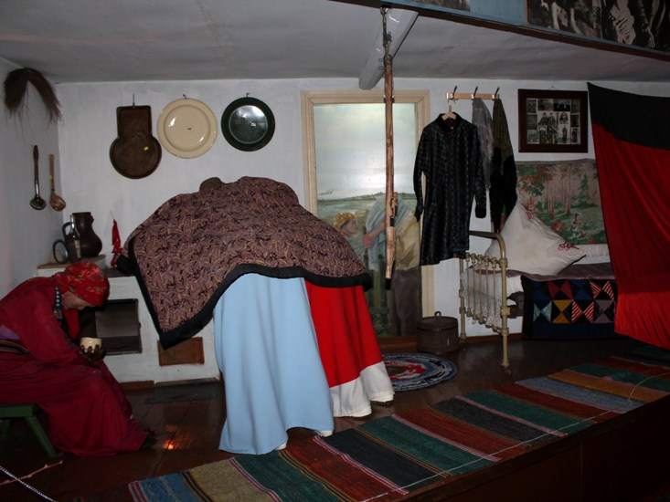
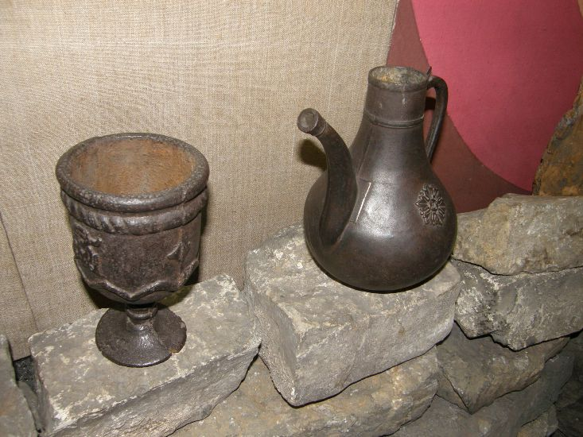
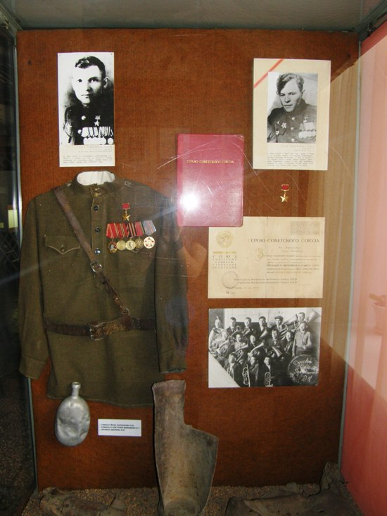
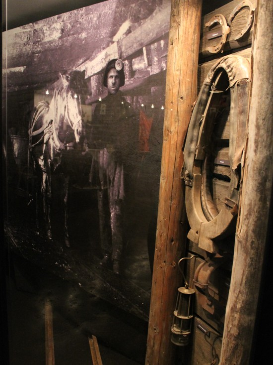
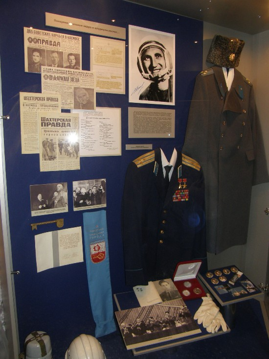

Постоянные экспозиции

Зал "Природа" рассказывает о развитии природы Кузбасса от девонскогоe22 периода до наших дней. Наглядными пособиями служат палеонтологические находки разных геологических эпох, останки ископаемых животных, коллекции насекомых, животных и растений края.

Зал «Археология» отражает все периоды присутствия человека на Кузнецкой земле – от эпохи камня до железного века. Археологи обнаружилиe20 ряд поселений и могильников эпохи неолита на территории Кузбасса. В одной из экспозиций представлена уникальная коллекция глиняных сосудов Андроновской культуры, причем разнообразный орнамент не повторяется ни на одном горшке.

Зал «Этнография» представляет материальную и духовную культуры аборигенного населения (шорцы и телеуты) и русских, начавших осваивать эти земли с 17 века, взаимопроникновение и влияние культур.

Здесь Вы можете познакомиться с историей села Прокопьевское и его бытом конца 19 – начала 20 веков, увидеть мемориальный уголок выдающегося геолога В. И. Яворского, исследователя Прокопьевско-Киселевского угольного месторождения.

Зал «Революция» повествует об основных событиях гражданской войны на юге Кузбасса, о боевом пути партизанского отряда П. Ф. Сухова.

Экспозиции зала «Великая Отечественная война 1941-1945 гг.» освещают вклад трудящихся Прокопьевска в Победу: работу угольных предприятий, эвакуированных фабрик и заводов, железной дороги, эвакогоспиталей. Большая часть экспозиции посвящена фронтовому подвигу прокопчан – участников Великой Отечественной войны.
Зал «Становление города Прокопьевска». Экспозиции зала посвящены истории шахтного строительства, представлены фотографии, документы и личные вещи первых шахтостроителей, ударных бригад и стахановцев.

Промышленное освоение Прокопьевского угольного месторождения началось в 20-е годы прошлого e97столетия. Начиная с экспозиции старой штольни, которая сооружена в музее по рассказам шахтеров и старым фотографиям, можно получить информацию об уровне и условиях угледобычи того времени.
Большая экспозиция отражает трагические события времен репрессий.
26 января 2013 года, в день 70-летия Кемеровской области, этот зал получил свое второе рождение: обновлены и расширены основные разделы экспозиции, появился раздел, посвященный ордена Ленина тресту «Прокопьевскшахтострой».
Посмотреть панораму зала "Становление города Прокопьевска"

Открытие зала «Космос» было посвящено празднованию Дня шахтера в рамках 70-летия области. e27Рождение «космического проекта» в музее не случайно, ведь космонавт Б. В. Волынов, пионер стыковки космических кораблей, жил и учился в Прокопьевске. Для многих и сейчас это событие из ряда невероятных – настоящий космический спускаемый аппарат в жилом здании. Но это уже факт. К уникальным экспонатам относятся шинель, папаха, парадный мундир и другие личные вещи космонавта, а также космические костюмы и гидрокомбинезон.
Выставочные залы музея постоянно представляют новые передвижные выставки, связанные с историческими и другими событиями, из собственных фондов, а также предметов и коллекций других музеев и организаций, представляющие интерес для различной аудитории.
Назад